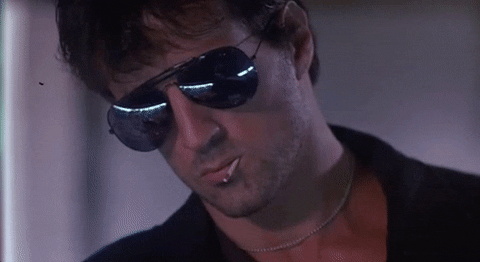
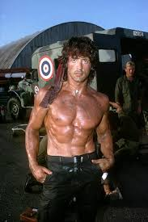
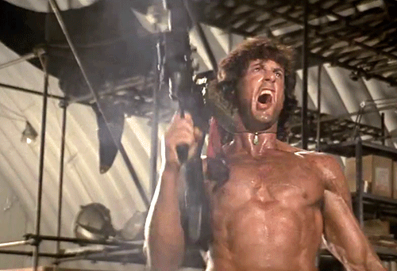

სილვესტერ სტალონე
როკი ბალბოასა და ჯონ რამბოს შექმნილი
ჰოლივუდის ყველაზე ცნობილი Action ვარსკვლავი!
ბიოგრაფია
სრული სახელი: Sylvester Gardenzio Stallone
დაბადებული: 6 ივლისი 1946, ნიუ იორკი
სიმაღლე: 177 სმ
ოჯახი: 3 ქალიშვილი, 2 ცოლი
განათლება: American College of Switzerland
როკი ბალბოა
- Rocky (1976) - ოსკარი საუკეთესო ფილმისთვის
- Rocky II-IV (1979-1985)
- Rocky Balboa (2006)
- Creed (2015) - ოსკარის ნომინაცია
- 8 ფილმი სულ, 40+ წელი

ციტატა: "Yo Adrian! ჩვენ გავიმარჯვეთ!"
ჯონ რამბო
- First Blood (1982) - ვიეტნამის ვეტერანი
- Rambo: First Blood Part II (1985)
- Rambo III (1988)
- Rambo (2008)
- Rambo: Last Blood (2019)

მსოფლიო რეკორდი: 5 ფილმი ერთი პერსონაჟით
სხვა ცნობილი ფილმები
- Cobra (1986)
- Cliffhanger (1993)
- Demolition Man (1993)
- The Expendables (2010-2014)
- Escape Plan (2013)

სულ: 70+ ფილმი რეჟისორობით და მწერლობით
საინტერესო ფაქტები
ფაქტი 1: Rocky-ის სცენარი 1 დღეში დაწერა, $400-ად გაყიდა
ფაქტი 2: უარი თქვა Star Wars-ის ჰან სოლოს როლზე
ფაქტი 3: თავად წერდა ყველა Rocky/Rambo სცენარს
ფაქტი 4: ოქროს გლობუსი და ოსკარის ნომინაციები